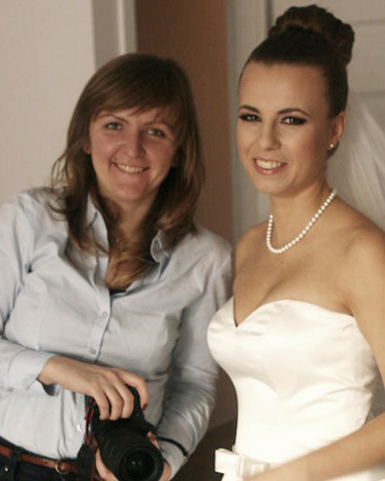

About me
Marta Lara
photographer
Hi, I'm Marta
Photography is my passion since my early years on earth. Since 2009 I am doing it professionally. When I take a picture I want to capture the most special emotions on people faces. I want to make people feel they are pretty, to show their inner beauty. The biggest reward after delivering photo session to the customers is when I see their smile when they look at the pictures. My other passion is languages, so I can speak your native language during the photo shoot (Polish, Russian, German, English, Spanish), if needed :).
My History
- 2009-2012
Studied photography for two years in Regionalny Ośrodek Edukacji (Wrocław), where I obtained “Technician of Photography” certificate.
- 2013
Developed further my Photoshop skills, attending a course in Akademia Fotografii (Kraków).I traveled to Turkey to work as a photographer in European Voluntary Service, where I documented the customs and general ambience of Stambul and Batman (in the border between Turkey and Syria). I hosted an exposition in Batman about my coverage.
- 2014
I organized expositions of reportage photography from the project in Turkey on Kazimierz district in Kraków. This year I also volunteered on the festival "Photomonth" in Kraków.
- 2018
After obtaining an official certificate from Archdiocese of Czestochowa, I can now take pictures in church events (official permission to photograph weddings, first communions, etc.)
- 2009-now
Fully committed to my passion for photography. I am always developing in the latest techniques and increasing my portfolio of professional photo shoots.